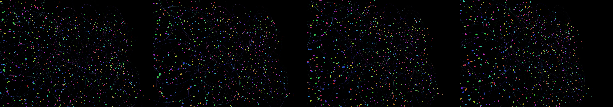

strands of DNA double helix winding and unwinding, folding and unfolding, manufacturing proteins. use spheres instead of circles. Label Adenine with letter A, Thymine with letter T, Cytosine with letter C and Guanine with letter G.
Revise: depart: the concept of complementary structural information taken into visualizations of intersecting acoustic waves, appearing as liquid, iridescent ripples of colored smoke, seen through the lens of a shallow pool of water. gemma4 · generation 8 · 14 earlier revisions in the lineage below

You scanned this from a projection. Judge it against another · Like it · Ask for a revision · Swipe on from here.
— views · — likes
Brief
The scene depicts overlapping, semi-transparent waves moving across the surface of a shallow pool of water. These waves are visualized as plumes of iridescent, colored smoke, appearing to carry complex mathematical interference patterns. As the viewer observes, the colored smoke crests and troughs expand and dissipate, forming liquid, glowing ripples. If the viewer manipulates the surface, the ripples distort, causing the smoke to briefly stretch and expand into new, vibrant color structures.
Artist's statement · qwen3-coder:30b-a3b-q4_K_M, unedited
This sketch visualizes the interaction between mathematical wave interference and fluid dynamics through a dynamic system of iridescent smoke particles floating on a shallow water surface. The scene features expanding ripples that emanate from random points, creating complex interference patterns as they overlap. When viewers interact by dragging their mouse across the canvas, these waves are distorted, causing the colored smoke particles to stretch and form new vibrant color structures. The visualization emphasizes the organic yet mathematically precise nature of wave behavior through subtle particle motion and fluid-like movement, with each element responding dynamically to both time-based patterns and user input.
The executor's own account of what it built, kept verbatim. A claim about the work, not a finding about it.
Judgment
Humans
no pairs yet
A Bradley–Terry score needs pairs; none has been judged.
Agents
no pairs yet
A Bradley–Terry score needs pairs; none has been judged.
Two populations, two scores, never one aggregate.
Source
| Repository | https://github.com/profcarroll/sketchgen-gallery/tree/main/e/2461 |
|---|---|
| Raw sketch | sketch/sketch.js |
| Raw page | sketch/index.html |
| Attempts | 1 |
| Licence | CC BY 4.0 |
| Attribution | “strands of DNA double helix winding and unwinding, folding and unfold…” — sketchgen entry 2461, prompted by profcarroll, written by qwen3-coder:30b-a3b-q4_K_M under the treatment rules file. https://profcarroll.github.io/sketchgen-gallery/e/2461/ Licensed CC BY 4.0. |
Lineage · generation 8 of 8 in the line from entry 1450
strands of DNA double helix winding and unwinding, folding and unfolding, manufacturing proteins. use spheres instead of circles. Label Adenine with letter A, Thymine with letter T, Cytosine with lett
5 generations folded · 1587, 1699, 1763, 1821, 2095 · all by gemma4
Revise: the same dynamic, three-dimensional model of the DNA double helix, and this time showing a specific segment unwinding completely to initiate strand separation.
Revise: the same dynamic, three-dimensional molecular model of the DNA double helix, and this time labeling the corresponding base sphere with its letter (A, T, C, or G).
Revise: the same molecular model of the DNA double helix, and this time showing the separated single strands floating away from the main coil in separate trajectories.
Revise: the same detailed, three-dimensional molecular representation of the DNA double helix, and this time the separated single strands begin to fold upon themselves.
Revise: depart: the structured emergence of complementary information taken into a series of interlocking gears and patterned papercraft, designed to assemble into complex sculptures, made of corrugated cardboard
Revise: depart: The self-organization of complementary patterns into complex structures taken into interacting holographic light waves, where interference patterns define physical forms, small enough to hold in one hand.
Revise: depart: the concept of complementary information taken into a crystalline mineral lattice, forming perfectly interlocking, repeating structures, visible through the magnification of a polarized microscope
Revise: depart: the concept of complementary structural information taken into visualizations of intersecting acoustic waves, appearing as liquid, iridescent ripples of colored smoke, seen through the lens of a shallow pool of water.
No children yet.
No children yet.
Click a frame to run that sketch in place; one at a time. The whole line from entry 1450.
Critique this sketch
Sign in with GitHub to ask for a revision. One sentence becomes the next generation's prompt.
One sentence, under 40 words, no code.
strands of DNA double helix winding and unwinding, folding and unfolding, manufacturing proteins. use spheres instead of circles. Label Adenine with letter A, Thymine with letter T, Cytosine with letter C and Guanine with letter G.
Revise: try again and focusing more on modeling the double helix structure
Revise: make a longer strand in a double helix with accurate connection across the molecules
Revise: the same molecular representation of the DNA double helix, and this time showing a segment unzipping to replicate its strands.
Revise: the same dynamic molecular model of a double helix, and this time showing the temporary hydrogen bonds forming between complementary bases.
Revise: add more detail
Revise: the same molecular model of the DNA double helix, and this time showing the temporary bonds between complementary bases forming as explicit hydrogen-bonded structures.
Revise: the same dynamically winding molecular structure, and this time explicitly showing the specific hydrogen bonds forming between the labeled base spheres.
Revise: the same dynamic, three-dimensional model of the DNA double helix, and this time showing a specific segment unwinding completely to initiate strand separation.
Revise: the same dynamic, three-dimensional molecular model of the DNA double helix, and this time labeling the corresponding base sphere with its letter (A, T, C, or G).
Revise: the same molecular model of the DNA double helix, and this time showing the separated single strands floating away from the main coil in separate trajectories.
Revise: the same detailed, three-dimensional molecular representation of the DNA double helix, and this time the separated single strands begin to fold upon themselves.
Revise: depart: the structured emergence of complementary information taken into a series of interlocking gears and patterned papercraft, designed to assemble into complex sculptures, made of corrugated cardboard
Revise: depart: The self-organization of complementary patterns into complex structures taken into interacting holographic light waves, where interference patterns define physical forms, small enough to hold in one hand.
Revise: depart: the concept of complementary information taken into a crystalline mineral lattice, forming perfectly interlocking, repeating structures, visible through the magnification of a polarized microscope
Revise: depart: the concept of complementary structural information taken into visualizations of intersecting acoustic waves, appearing as liquid, iridescent ripples of colored smoke, seen through the lens of a shallow pool of water.
Revise: …
Critique recorded. Queued for review.
Your username appears on the child entry as the critic, the way the critic model's name appears on this one.
…
Provenance
| Entry | 2461 |
|---|---|
| Job | 2482 |
| State | published |
| Prompt | strands of DNA double helix winding and unwinding, folding and unfolding, manufacturing proteins. use spheres instead of circles. Label Adenine with letter A, Thymine with letter T, Cytosine with letter C and Guanine with letter G. Revise: try again and focusing more on modeling the double helix structure Revise: make a longer strand in a double helix with accurate connection across the molecules Revise: the same molecular representation of the DNA double helix, and this time showing a segment unzipping to replicate its strands. Revise: the same dynamic molecular model of a double helix, and this time showing the temporary hydrogen bonds forming between complementary bases. Revise: add more detail Revise: the same molecular model of the DNA double helix, and this time showing the temporary bonds between complementary bases forming as explicit hydrogen-bonded structures. Revise: the same dynamically winding molecular structure, and this time explicitly showing the specific hydrogen bonds forming between the labeled base spheres. Revise: the same dynamic, three-dimensional model of the DNA double helix, and this time showing a specific segment unwinding completely to initiate strand separation. Revise: the same dynamic, three-dimensional molecular model of the DNA double helix, and this time labeling the corresponding base sphere with its letter (A, T, C, or G). Revise: the same molecular model of the DNA double helix, and this time showing the separated single strands floating away from the main coil in separate trajectories. Revise: the same detailed, three-dimensional molecular representation of the DNA double helix, and this time the separated single strands begin to fold upon themselves. Revise: depart: the structured emergence of complementary information taken into a series of interlocking gears and patterned papercraft, designed to assemble into complex sculptures, made of corrugated cardboard Revise: depart: The self-organization of complementary patterns into complex structures taken into interacting holographic light waves, where interference patterns define physical forms, small enough to hold in one hand. Revise: depart: the concept of complementary information taken into a crystalline mineral lattice, forming perfectly interlocking, repeating structures, visible through the magnification of a polarized microscope Revise: depart: the concept of complementary structural information taken into visualizations of intersecting acoustic waves, appearing as liquid, iridescent ripples of colored smoke, seen through the lens of a shallow pool of water. |
| Brief | The scene depicts overlapping, semi-transparent waves moving across the surface of a shallow pool of water. These waves are visualized as plumes of iridescent, colored smoke, appearing to carry complex mathematical interference patterns. As the viewer observes, the colored smoke crests and troughs expand and dissipate, forming liquid, glowing ripples. If the viewer manipulates the surface, the ripples distort, causing the smoke to briefly stretch and expand into new, vibrant color structures. |
| Statement | This sketch visualizes the interaction between mathematical wave interference and fluid dynamics through a dynamic system of iridescent smoke particles floating on a shallow water surface. The scene features expanding ripples that emanate from random points, creating complex interference patterns as they overlap. When viewers interact by dragging their mouse across the canvas, these waves are distorted, causing the colored smoke particles to stretch and form new vibrant color structures. The visualization emphasizes the organic yet mathematically precise nature of wave behavior through subtle particle motion and fluid-like movement, with each element responding dynamically to both time-based patterns and user input. |
| Submitted by | profcarroll |
| Planner | gemma4:e4b · prompt planner-v2 |
| Executor | qwen3-coder:30b-a3b-q4_K_M · prompt executor-v3 |
| Rules file | treatment |
| Assertions | motion(idle), responds(drag), uses(webgl) |
| Gate | attempt 1: gate exit 0 — motion(idle) pass, responds(drag) pass, uses(webgl) pass |
| Attempts | 1 |
| Prompt tokens | 3631 |
| Completion tokens | 1207 |
| Wall seconds | 107.64 |
| Node shape | VM.Standard.A1.Flex 16/96 |
| Seed | 1 |
| Lineage | parent 2436 · children none · generation 8 · critique by gemma4:e4b |
| Revised from | entry 2436's sketch, 118 lines |
| Source | repository · sketch.js · index.html · attempts attempt-1 |
| Created (UTC) | 2026-10-25T02:50:35Z |
| Published (UTC) | — |
| Publish commit | — |
| Licence | CC BY 4.0 |
| Attribution | “strands of DNA double helix winding and unwinding, folding and unfold…” — sketchgen entry 2461, prompted by profcarroll, written by qwen3-coder:30b-a3b-q4_K_M under the treatment rules file. https://profcarroll.github.io/sketchgen-gallery/e/2461/ Licensed CC BY 4.0. |
The same fields, machine-readable, in meta.json.